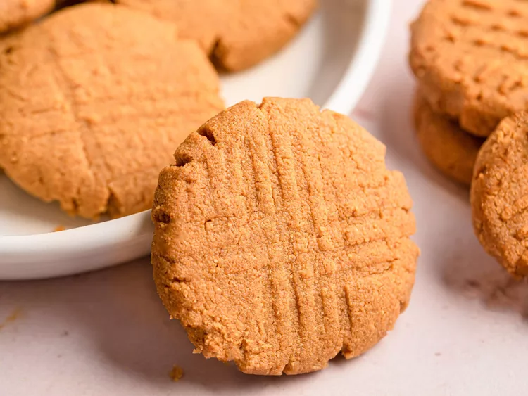

Peanut Butter Cookies

Description
These irresistible 3-ingredient peanut butter cookies seem too good to be true,
but they’re very real! The recipe is so easy, you’ll have it memorized in no time.
Ingredients
- 1 cup peanut butter
- 1 cup white sugar
- 1 egg
Steps
- Gather all ingredients.
- Preheat the oven to 350 degrees F (175 degrees C).
- Mix peanut butter, sugar, and egg together in a bowl using an electric mixer until smooth and creamy.
- Roll mixture into 1-inch balls and place 1 inch apart on an ungreased baking sheet
- Flatten each with a fork, making a criss-cross pattern.
- Bake in the preheated oven until edges are firm, about 10 minutes.
Cool on the baking sheet briefly before removing to a wire rack to cool completely.
- Enjoy!